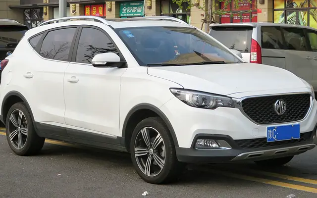

Par Motor › Precios por modelo › MG ZS
Precio de segunda mano · noviembre de 2026¿Cuánto vale un MG ZS de segunda mano?

Precio justo estimado de un MG ZS usado en España, año por año, con los kilómetros normales para su edad y en buen estado: de 6.500 € a 25.800 €. Para tasar el tuyo con sus kilómetros reales y su estado, usa el tasador gratis.
Precios del MG ZS por año
ZS (2017–hoy)
Precio de nuevo: 1.5 106 CV, 15.000 € · ZS EV 143 CV, 30.000 € · 1.5 Hybrid+ 197 CV, 24.000 €
| Año | Km normales | 1.5 106 CV · Gasolina | ZS EV 143 CV · Eléctrico | 1.5 Hybrid+ 197 CV · Híbrido |
|---|---|---|---|---|
| 2026 | 5.000 km | 15.200 € | 25.800 € | 25.500 € |
| 2025 | 20.000 km | 12.600 € | 21.500 € | 21.200 € |
| 2024 | 35.000 km | 11.600 € | 19.700 € | 19.500 € |
| 2023 | 50.000 km | 10.700 € | 18.200 € | 17.900 € |
| 2022 | 65.000 km | 9.800 € | 16.700 € | 16.500 € |
| 2021 | 80.000 km | 8.700 € | 14.700 € | 14.600 € |
| 2020 | 95.000 km | 7.500 € | 12.700 € | 12.600 € |
| 2019 | 100.000 km | 7.000 € | 11.800 € | 11.700 € |
| 2018 | 100.000 km | 6.700 € | 11.400 € | 11.300 € |
| 2017 | 100.000 km | 6.500 € | 11.000 € | 10.900 € |
Kilómetros normales: 15.000 al año en gasolina, híbridos y eléctricos, y 20.000 en diésel, con un máximo de 100.000 km (por encima no tasamos: el precio depende demasiado del historial de cada coche). Cifras redondeadas a 100 €.
Preguntas frecuentes
¿Cuánto vale un MG ZS de segunda mano?
Según el año, la versión y los kilómetros, un MG ZS usado vale hoy de 6.500 € a 25.800 € en España. El más barato de nuestra tabla es un 1.5 de 2017 (6.500 €) y el más caro un ZS EV de 2026 (25.800 €). Son precios justos estimados entre particulares y profesionales, con los kilómetros normales para su edad y en buen estado.
¿Cuánto valor pierde un MG ZS al año?
Con unos años encima, un MG ZS pierde alrededor de un 8 % de su valor cada año (calculado sobre el 1.5 de la generación ZS). Los primeros años la caída es mayor y a partir de los 70.000 km se acelera.
¿Qué motorizaciones tiene el MG ZS?
En nuestra base de datos hay versiones gasolina, eléctrico y híbrido, en 1 generación: ZS.
¿Cómo sé si me piden demasiado por un MG ZS?
Abre el tasador de Par Motor, elige el MG ZS, el año y los kilómetros reales, y escribe lo que te piden. Te diremos si está por debajo del precio justo (chollo) o por encima (caro). Es gratis y no pide registro ni matrícula.
Otros MG
Compara su coste real
El precio de compra es solo una parte. Mira cuánto te costaría al mes con combustible, seguro, neumáticos, mantenimiento y lo que pierde de valor.
Abrir el comparador →